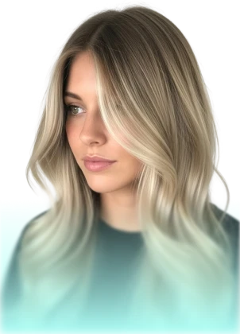

AirTouch, Balayage,
Shatush, Мелірування
М'які переливи кольору з ефектом «сонячних бликів». Малюнок непомітно відростає, звільняючи вас від частих візитів до майстра — результат тримається 3–4 місяці.